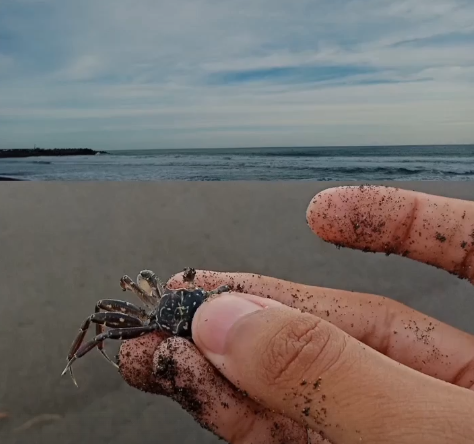
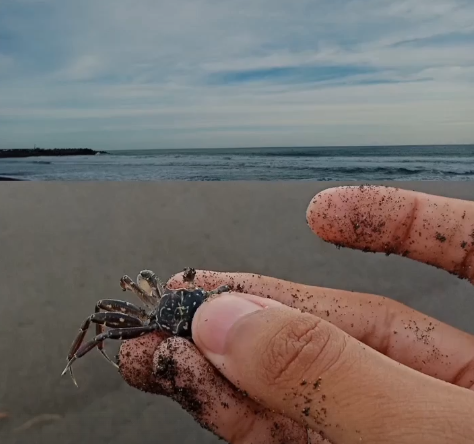

Perkenalan Nama saya Dionysius Diaz Damar Wilansa. Saya seorang mahasiswa yang bertempat tinggal di Sleman, D.I.Yogyakarta. Saya sangat menyukai teknologi dan senang mempelajari hal-hal baru
Saya telah menempuh pendidikan saya di :
Setelah lulus, saya ingin bekerja di beberapa perusahaan teknologi:
Proyek terbaru saya saat ini adalah membuat aplikasi Penjualan Buku yang saya gunakan sebagai Proyek UTS untuk mata kuliah Object Oriented Programming. Aplikasi ini kedepannya dapat dikemabangkan lebih baik lagi untuk diterapkan pada Toko Buku maupun Perpustakaan.
Anda dapat menghubungi saya melalui email di dezttroll@gmail.com atau mengunjungi profil LinkedIn saya di Dionysius Diaz.
Berikut adalah beberapa foto dari perjalanan saya:
 

Saya memiliki beberapa hobi yang saya tekuni di waktu luang:
| Bahasa Pemrograman | Tingkat Penguasaan |
|---|---|
| Java dan Python | Menguasai |
| HTML dan CSS | Menengah |
| PHP | Menengah |
"Diaz adalah seorang mahasiswa prodi Informatika yang cukup teladan dan bertanggung jawab dengan tugas yang diberikan" - Anonim